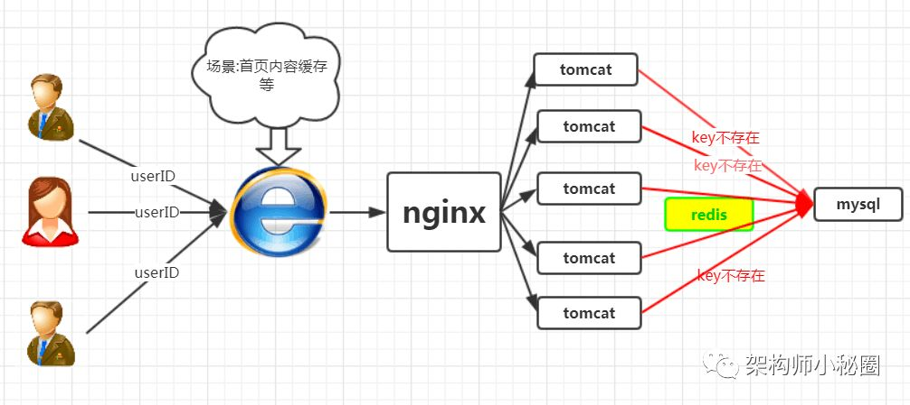

分布式之缓存击穿
作者：孤独烟 来自： http://rjzheng.cnblogs.com/
在谈论缓存击穿之前，我们先来回忆下从缓存中加载数据的逻辑，如下图所示
因此，如果黑客每次故意查询一个在缓存内必然不存在的数据，导致每次请求都要去存储层去查询，这样缓存就失去了意义。如果在大流量下数据库可能挂掉。这就是缓存击穿。
场景如下图所示:

我们正常人在登录首页的时候，都是根据userID来命中数据，然而黑客的目的是破坏你的系统，黑客可以随机生成一堆userID,然后将这些请求怼到你的服务器上，这些请求在缓存中不存在，就会穿过缓存，直接怼到数据库上,从而造成数据库连接异常。
在这里我们给出三套解决方案，大家根据项目中的实际情况，选择使用.
讲下述三种方案前，我们先回忆下redis的setnx方法
SETNX key value
将 key 的值设为 value ，当且仅当 key 不存在。
若给定的 key 已经存在，则 SETNX 不做任何动作。
SETNX 是『SET if Not eXists』(如果不存在，则 SET)的简写。
可用版本：>= 1.0.0
时间复杂度： O(1)
返回值： 设置成功，返回 1。设置失败，返回 0 。
效果如下
redis> EXISTS job # job 不存在
(integer) 0
redis> SETNX job "programmer" # job 设置成功
(integer) 1
redis> SETNX job "code-farmer" # 尝试覆盖 job ，失败
(integer) 0
redis> GET job # 没有被覆盖
"programmer"该方法是比较普遍的做法，即，在根据key获得的value值为空时，先锁上，再从数据库加载，加载完毕，释放锁。若其他线程发现获取锁失败，则睡眠50ms后重试。
至于锁的类型，单机环境用并发包的Lock类型就行，集群环境则使用分布式锁( redis的setnx)
集群环境的redis的代码如下所示:
String get(String key) {
String value = redis.get(key);
if (value == null) {
if (redis.setnx(key_mutex, "1")) {
// 3 min timeout to avoid mutex holder crash
redis.expire(key_mutex, 3 * 60)
value = db.get(key);
redis.set(key, value);
redis.delete(key_mutex);
} else {
//其他线程休息50毫秒后重试
Thread.sleep(50);
get(key);
}
}
} 优点:
思路简单
保证一致性
缺点
代码复杂度增大
存在死锁的风险
在这种方案下，构建缓存采取异步策略，会从线程池中取线程来异步构建缓存，从而不会让所有的请求直接怼到数据库上。该方案redis自己维护一个timeout，当timeout小于System.currentTimeMillis()时，则进行缓存更新，否则直接返回value值。
集群环境的redis代码如下所示:
String get(final String key) {
V v = redis.get(key);
String value = v.getValue();
long timeout = v.getTimeout();
if (v.timeout <= System.currentTimeMillis()) {
// 异步更新后台异常执行
threadPool.execute(new Runnable() {
publicvoidrun() {
String keyMutex = "mutex:" + key;
if (redis.setnx(keyMutex, "1")) {
// 3 min timeout to avoid mutex holder crash
redis.expire(keyMutex, 3 * 60);
String dbValue = db.get(key);
redis.set(key, dbValue);
redis.delete(keyMutex);
}
}
});
}
returnvalue;
} 优点:
性价最佳，用户无需等待
缺点
无法保证缓存一致性
1、原理
布隆过滤器的巨大用处就是，能够迅速判断一个元素是否在一个集合中。因此他有如下三个使用场景:
网页爬虫对URL的去重，避免爬取相同的URL地址
反垃圾邮件，从数十亿个垃圾邮件列表中判断某邮箱是否垃圾邮箱（同理，垃圾短信）
缓存击穿，将已存在的缓存放到布隆过滤器中，当黑客访问不存在的缓存时迅速返回避免缓存及DB挂掉。
OK，接下来我们来谈谈布隆过滤器的原理
其内部维护一个全为0的bit数组，需要说明的是，布隆过滤器有一个误判率的概念，误判率越低，则数组越长，所占空间越大。误判率越高则数组越小，所占的空间越小。


2、性能测试
代码如下:
(1)新建一个maven工程，引入guava包
<dependencies>
<dependency>
<groupId>com.google.guava</groupId>
<artifactId>guava</artifactId>
<version>22.0</version>
</dependency>
</dependencies>
(2)测试一个元素是否属于一个百万元素集合所需耗时
package bloomfilter;
import com.google.common.hash.BloomFilter;
import com.google.common.hash.Funnels;
import java.nio.charset.Charset;
publicclassTest{
privatestaticint size = 1000000;
privatestatic BloomFilter<Integer> bloomFilter = BloomFilter.create(Funnels.integerFunnel(), size);
publicstaticvoidmain(String[] args){
for (int i = 0; i < size; i++) {
bloomFilter.put(i);
}
long startTime = System.nanoTime(); // 获取开始时间
//判断这一百万个数中是否包含29999这个数
if (bloomFilter.mightContain(29999)) {
System.out.println("命中了");
}
long endTime = System.nanoTime(); // 获取结束时间
System.out.println("程序运行时间： " + (endTime - startTime) + "纳秒");
}
}输出如下所示
命中了
程序运行时间： 219386纳秒
也就是说，判断一个数是否属于一个百万级别的集合，只要0.219ms就可以完成，性能极佳。
(3)误判率的一些概念
首先，我们先不对误判率做显示的设置，进行一个测试，代码如下所示
package bloomfilter;
import java.util.ArrayList;
import java.util.List;
import com.google.common.hash.BloomFilter;
import com.google.common.hash.Funnels;
publicclassTest {
privatestaticint size = 1000000;
privatestatic BloomFilter<Integer> bloomFilter = BloomFilter.create(Funnels.integerFunnel(), size);
publicstaticvoidmain(String[] args){
for (int i = 0; i < size; i++) {
bloomFilter.put(i);
}
List<Integer> list = new ArrayList<Integer>(1000);
//故意取10000个不在过滤器里的值，看看有多少个会被认为在过滤器里
for (int i = size + 10000; i < size + 20000; i++) {
if (bloomFilter.mightContain(i)) {
list.add(i);
}
}
System.out.println("误判的数量：" + list.size());
}
}输出结果如下
误判对数量：330
如果上述代码所示，我们故意取10000个不在过滤器里的值，却还有330个被认为在过滤器里，这说明了误判率为0.03.即，在不做任何设置的情况下，默认的误判率为0.03。
下面上源码来证明：

接下来我们来看一下，误判率为0.03时，底层维护的bit数组的长度如下图所示

将bloomfilter的构造方法改为
private static BloomFilter<Integer> bloomFilter = BloomFilter.create(Funnels.integerFunnel(), size,0.01);
即，此时误判率为0.01。在这种情况下，底层维护的bit数组的长度如下图所示

由此可见，误判率越低，则底层维护的数组越长，占用空间越大。因此，误判率实际取值，根据服务器所能够承受的负载来决定，不是拍脑袋瞎想的。
3、实际使用
redis伪代码如下所示
String get(String key) {
String value = redis.get(key);
if (value == null) {
if(!bloomfilter.mightContain(key)){
returnnull;
}else{
value = db.get(key);
redis.set(key, value);
}
}
returnvalue；
} 优点:
思路简单
保证一致性
性能强
缺点
代码复杂度增大
需要另外维护一个集合来存放缓存的Key
布隆过滤器不支持删值操作
在总结部分，来个漫画把。希望对大家找工作有帮助

推荐阅读：
技术：分布式唯一ID极简教程
职场：程序员职业规划
觉得有帮助？请转发给更多人！

架构师小秘圈，聚集10万架构师的小圈子！不定期分享技术干货，行业秘闻！汇集各类奇妙好玩的话题和流行动向！长按左侧图片，扫码加入架构师微信群！